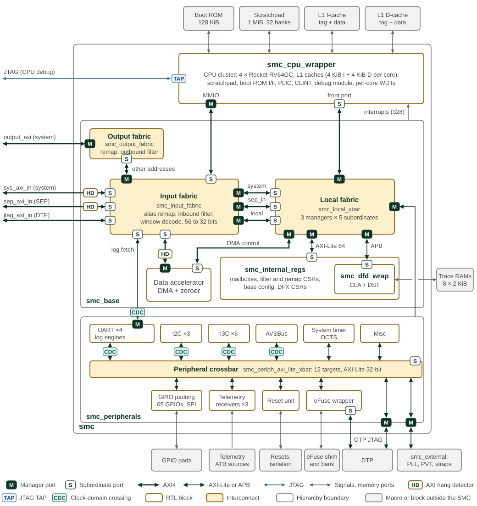

Overview
The System Management Controller (SMC) is a subsystem in a chiplet that takes on the system management tasks, including managing clock/voltage/reset, configuring the hardware platform, bringing up the system, and reporting system status.
Given its essential role, a SiP with multiple chiplets integrates one SMC per chiplet. Each SMC instance in a chiplet is responsible for system management of the local chiplet. On top of that, a management hierarchy is expected to be built among different SMC instances, according to the OCA hierarchical system architecture, , Sec. 3.1 and 3.2. This means an SMC instance in the primary chiplet is expected to play additional roles to manage SiP level tasks for the secondary chiplets.
The SMC consists of a micro-controller and different facilitative components for various purposes. At high level, SMC’s main control logic is implemented in the firmware running on the micro-controller. Hardware facilitative components are added only when certain tasks cannot be implemented by firmware.
SMC top-level microarchitecture shows the SMC microarchitectural diagram.

The smc module holds three blocks: the CPU cluster smc_cpu_wrapper,
smc_base and smc_peripherals. The CPU cluster is drawn as a single block;
the CPU and memory system section describes its contents. Every AXI4 and
AXI-Lite link carries a manager port (M) at the initiating end and a
subordinate port (S) at the other.
The input fabric takes six initiators: the system inbound port, the SEP inbound port, the JTAG debug port from the DTP, the CPU MMIO port, the UART log-engine fetch port and the data accelerator. Traffic inside the SMC window reaches the local fabric on three paths. System traffic passes the inbound filter first, and SEP traffic is not filtered. The CPU MMIO, JTAG, log and data accelerator traffic is alias-remapped and shares the third path. The input fabric forwards other addresses from those four initiators to the output fabric. The output fabric applies the M-mode and Xvisor remaps and the outbound filter, then drives the system outbound port. System and SEP requests outside the SMC window receive a decode error.
The local fabric, smc_local_xbar, serves five targets: the CPU front port,
the data accelerator control port, the internal CSRs, the DFD registers and
the peripheral port. Its internal AXI-Lite crossbar splits the internal CSRs
into eight blocks in smc_internal_regs: base configuration, the alias,
M-mode and Xvisor remaps, the inbound and outbound filters, the mailboxes
and the DFX CSRs. smc_base also builds the CPU interrupt vector from the
external, peripheral, mailbox and internal sources. Its three AXI hang
detectors, marked HD on the links they watch, observe the system inbound,
SEP inbound and data accelerator AXI links without sitting in the data
path; their combined interrupt reaches the PLIC through smc_peripherals.
The peripheral crossbar, smc_periph_axi_lite_xbar, has twelve targets.
Ten of them are inside smc_peripherals. The UART, I2C, I3C and AVSBus
register paths, and the log-engine fetch path, cross between the SMC clock
and the peripheral clock (CDC). The remaining two targets leave the SMC:
the DTP control registers and the smc_external window. In the reference
top smc_wrapper, smc_ip_integration supplies the grey blocks: the CPU
memory macros, the trace RAMs, the eFuse shim and bank model, the GPIO pad
shims, and the PLL, PVT and strap register models behind smc_external.
The rest of this documentation describes architectural requirements and microarchitectural implementation of SMC’s components in OCAH. A consolidated description of OCAH use cases is available in Use Cases.
1. Clocks and Resets
SMC coordinates clock, voltage and reset control. Its processing, reference timing and peripheral interfaces use distinct clock branches. Clocks and Resets describes the domains and reset sequencing.
2. CPU
The RISC-V CPU cluster executes management firmware using its caches and local memories. The CPU chapter describes its configuration, interfaces, isolation, error reporting and debug support.
3. Boot ROM
Boot ROM contains the startup firmware. Scratchpad memory provides runtime storage. The Boot ROM chapter describes the hardware and links to the production firmware manual.
4. Interconnect
AXI4 and AXI4-Lite connect the CPU and management blocks. Remapping, traffic filters and crossbars provide address translation, access control and routing.
5. Interrupts
The PLIC routes system events; CLINT supplies core-local timer and software interrupts. The interrupt chapter describes their integration and handling.
6. Peripherals
DMA performs bulk transfers and Zeroer clears memory. Communication and control services include mailboxes, GPIO, I2C, I3C, UART and AVSBus. Telemetry receivers collect performance data; OCTS supports multi-chiplet timekeeping. PVT sensors provide environmental monitoring through adopter integration.
7. Design-for-Debug and CLA
JTAG, the RISC-V debug module and the Core Logic Analyzer support observation, triggering and trace capture.
8. eFuse Scan Protection
Scan protection controls access to eFuse shadow-register assets. Its dedicated chapter describes the asset classes and access restrictions.
9. Memory Map
The memory map summarizes the address space and points to the block pages for register details.